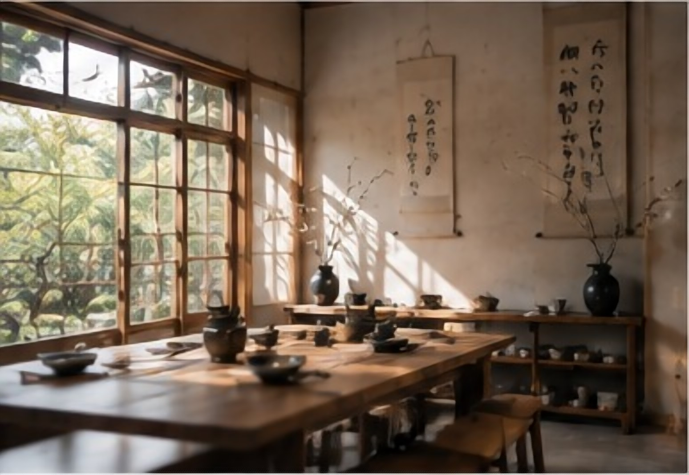

Reason
Reason選ばれる理由
景が選ばれる、3つの理由。
はじめての方にも、大切な器を直したい方にも。
景が大切にしている3つのことをご紹介します。
-
 01 Real Urushi
01 Real Urushi本格コースは本漆だけ
本漆 金継ぎ教室では合成の接着剤を使わず、天然の漆だけで直します。仕上がった器は、食器として毎日安心して使えます。
-

02 Small Class最大6名の少人数制
先生がひとりひとりの手元まで見守ります。はじめてでも、道具の持ち方からていねいにお教えします。
-
 03 Your Keshiki
03 Your Keshiki器ごとの景色をデザイン
割れ方は器ごとに違います。どこに金をのせるか先生と相談しながら、世界にひとつの景色をつくります。